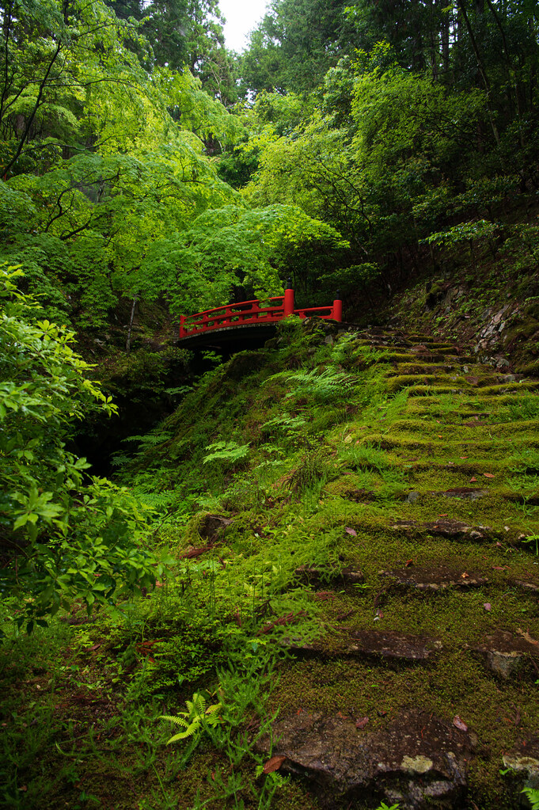
01
Rừng thì thầm
Nắng xuyên tán lá, những lối mòn nhỏ, rêu xanh và khoảng lặng giữa thiên nhiên. Màu của bộ ảnh là rêu, nâu gỗ và kem.
Nhặt nhạnh những khoảnh khắc nhỏ, ở đâu đó giữa hàng cây và ánh sáng.
Tôi chụp những nơi yên tĩnh, ánh sáng dịu và vẻ đẹp đời thường, gom lại từng mảnh thiên nhiên và ký ức.
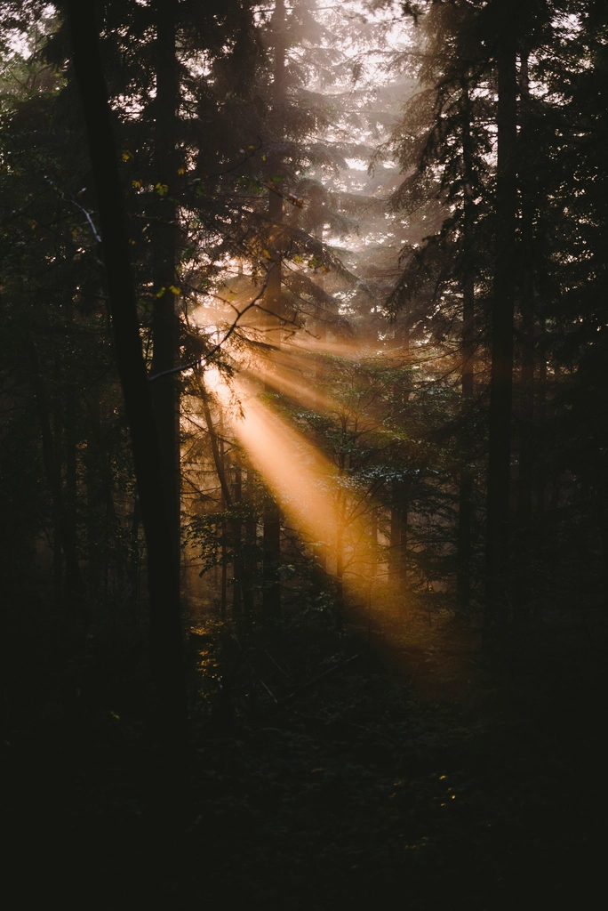
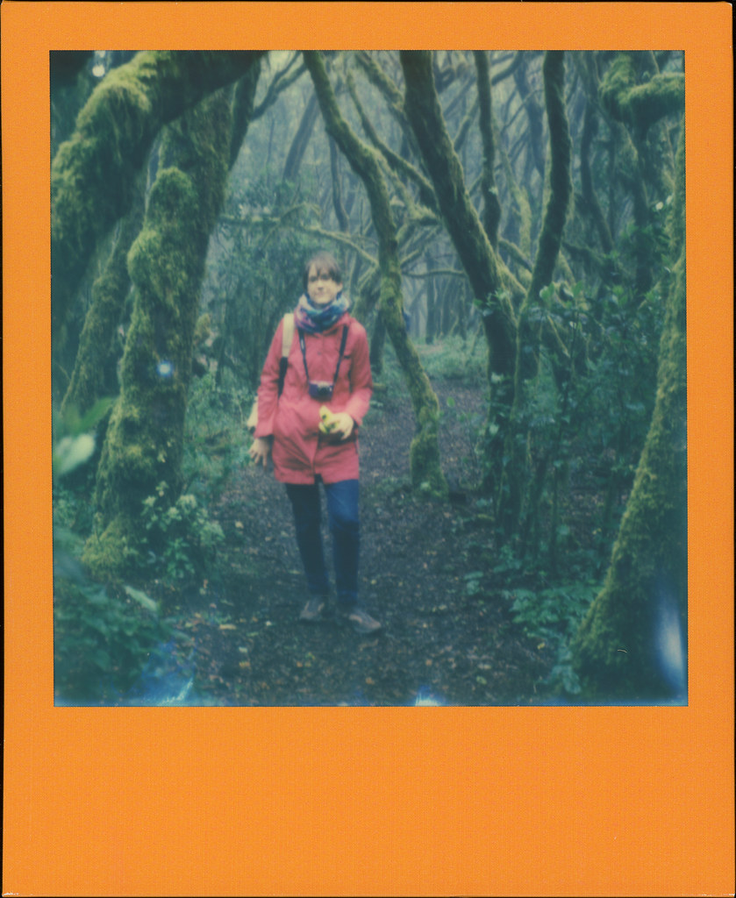
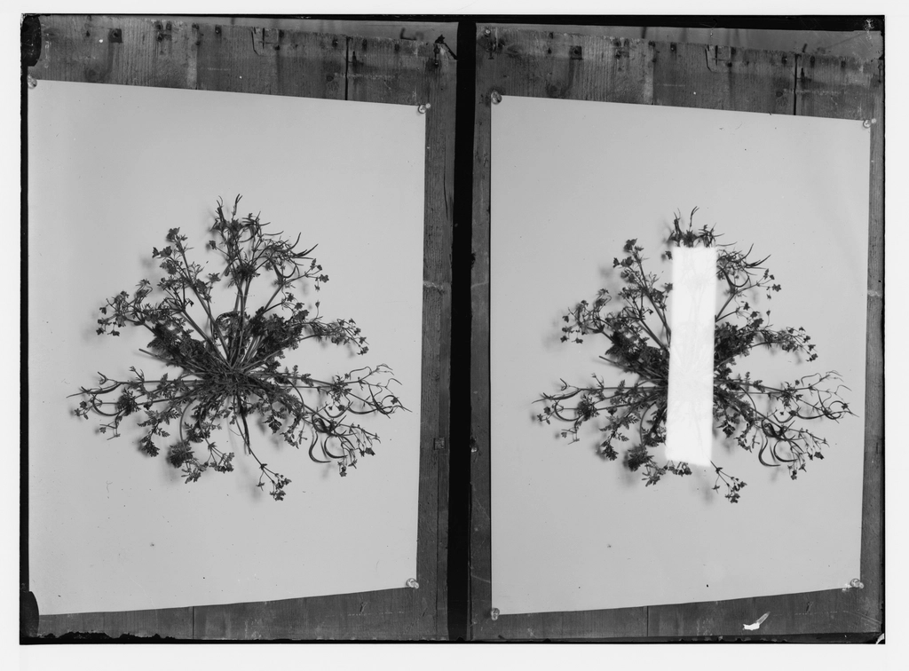
Bốn bộ ảnh, bốn góc của cùng một thế giới. Chạm vào ảnh để xem lớn kèm ghi chú.

01
Nắng xuyên tán lá, những lối mòn nhỏ, rêu xanh và khoảng lặng giữa thiên nhiên. Màu của bộ ảnh là rêu, nâu gỗ và kem.
02
Váy linen nhiều lớp, cardigan len, túi vải và những khoảnh khắc không tạo dáng: đọc sách bên cửa sổ, đi dạo trong vườn.
03
Hoa dại, hoa ép, sách cũ, thư tay và bàn gỗ. Những vật nhỏ lưu giữ kỷ niệm, như một trang nhật ký được giữ qua nhiều năm.
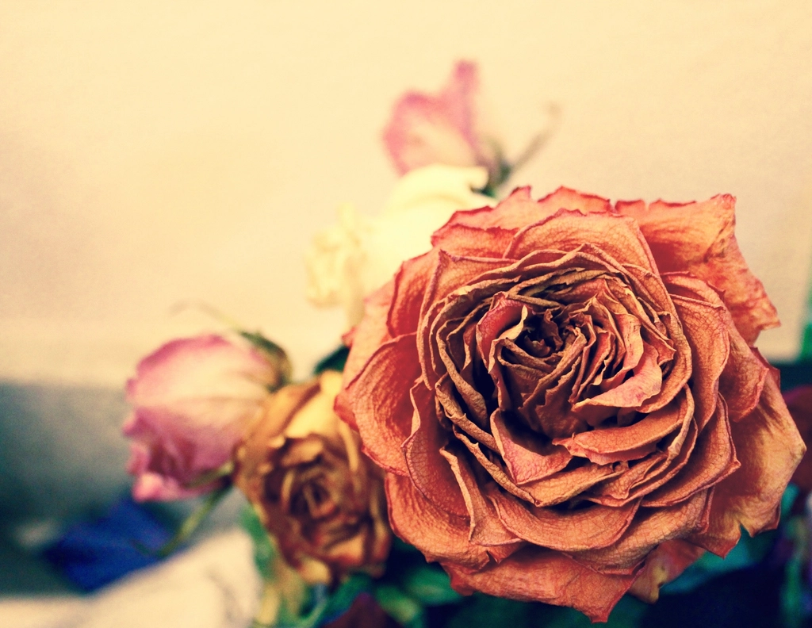
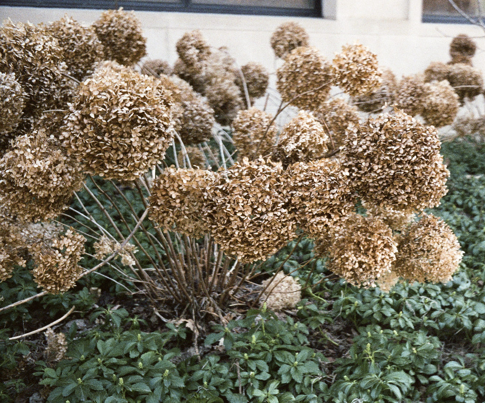
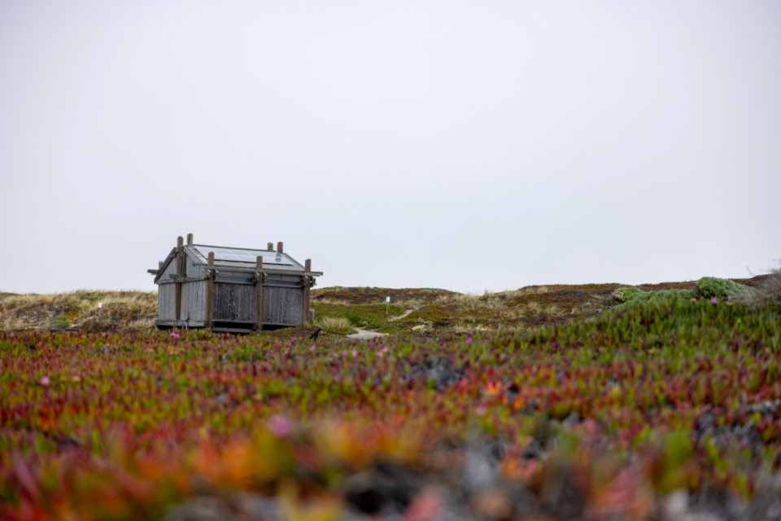
04
Căn nhà gỗ, khu vườn, khung cửa sổ cũ và những buổi chiều chậm rãi. Một chuỗi khoảnh khắc đời thường, gần gũi với thiên nhiên.
Câu chuyện phía sau những tấm ảnh. Các trang dưới đây là nội dung mẫu, dễ thay bằng ghi chép thật.
Tôi đi bộ vào rừng khi sương còn đọng trên rêu. Nắng xuyên qua từng tán lá và mọi thứ bỗng yên tĩnh đến mức nghe được tiếng mình thở.
Một góc cửa sổ, tách trà còn ấm và ánh sáng dịu trên mặt bàn gỗ. Tôi chụp ba khung hình rồi ngồi yên, để trà nguội dần.
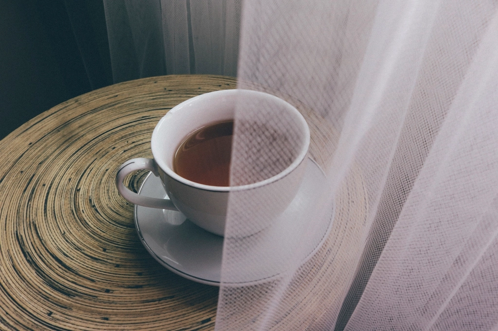
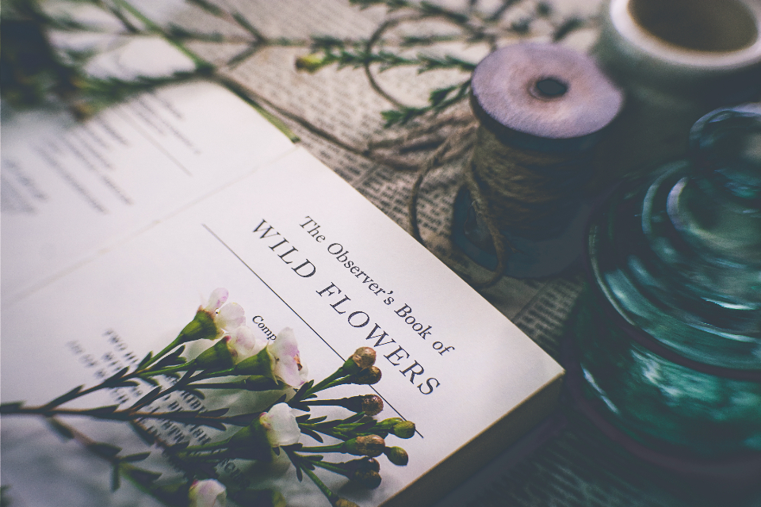
Vài bông hoa dại nhỏ nhặt được bên vệ đường, kẹp vào sách cho khỏi dập. Chúng trở thành cảm hứng cho cả một bộ ảnh tĩnh vật sau đó.
Rừng cây, giấy cũ, gỗ, hoa khô và nắng chiều.
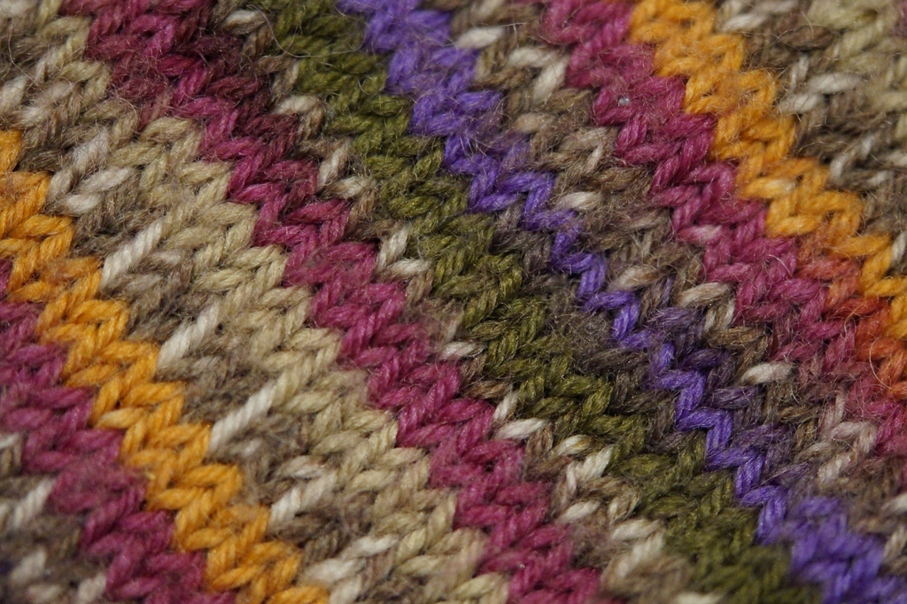
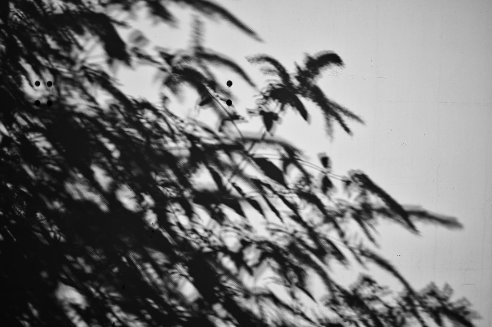
木漏れ日
Từ tiếng Nhật chỉ thứ ánh nắng lọt qua kẽ lá. Cả cuốn nhật ký này được đặt theo nó.
01
Để ý những chi tiết nhỏ trong thiên nhiên và đời sống thường ngày.
02
Ghi chú, chọn bối cảnh, dựng moodboard cho từng câu chuyện.
03
Chụp với sự chú tâm vào ánh sáng, bố cục, màu sắc và cảm xúc.
04
Chọn lọc, xử lý màu và giữ một ngôn ngữ hình ảnh nhất quán.
05
Sắp ảnh thành những câu chuyện có thể giữ lại như một cuốn nhật ký.
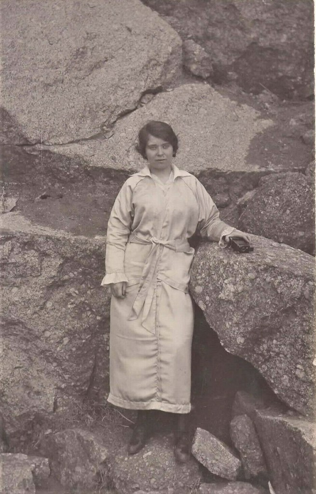
Tôi lớn lên cùng những buổi chiều đi lang thang trong vườn, nhặt lá rơi và kẹp hoa vào sách. Máy ảnh đến sau, như một cách để giữ lại những điều ấy lâu hơn.
Văn hóa thị giác Nhật Bản dạy tôi yêu khoảng trống: một cành hoa trong bình, một vệt nắng trên tường, sự tĩnh lặng giữa hai khung hình.
Tôi thích ảnh film vì nó buộc mình chậm lại. Mỗi cuộn phim chỉ có vài chục khung, nên tôi chỉ bấm khi thật sự rung động trước một khoảnh khắc đời thường.
Với tôi, chụp ảnh là lưu giữ ký ức. Không phải để khoe một nơi đẹp, mà để nhớ mình đã từng dừng lại ở đó.
“Tôi tìm thấy vẻ đẹp ở những điều chẳng đòi hỏi gì, ngoài một chút chú tâm.”
Hồ sơ ngắn gọn về những gì tôi đã làm và học. Các mốc bên cạnh là khung mẫu để điền thông tin thật.
Adobe Lightroom, Adobe Photoshop, máy ảnh film 35mm.
Mục này để trống cho đến khi có triển lãm hoặc ấn phẩm thật. Không liệt kê thành tích chưa có.
Bạn có một câu chuyện muốn kể, một nơi muốn khám phá, hay một khoảnh khắc nhỏ muốn lưu giữ? Tôi rất muốn được nghe.